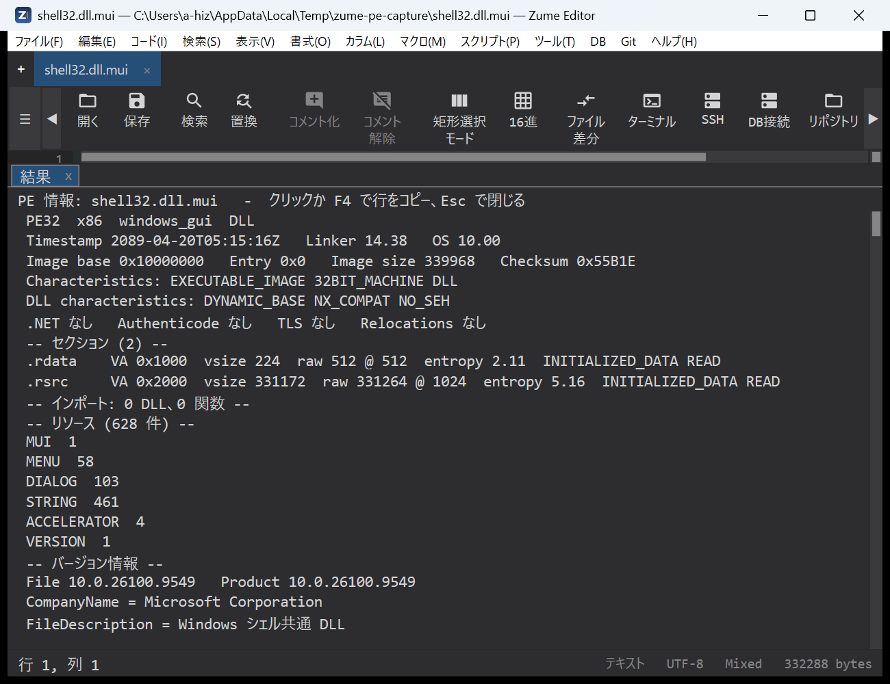
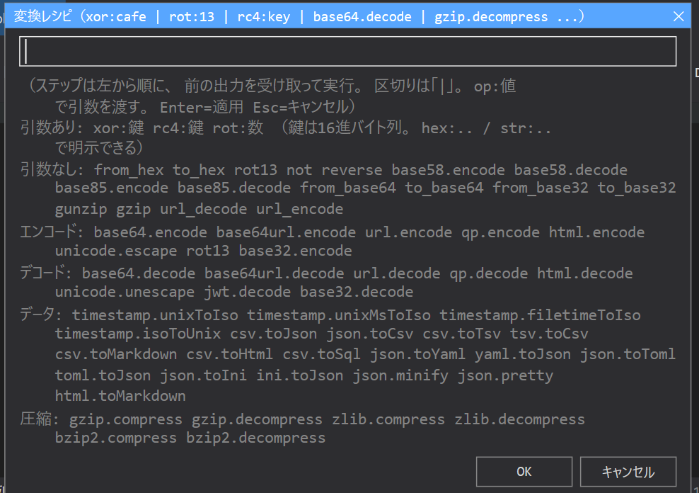

Security analysis¶
Zume Editor has tools for binary triage, data transforms and signature
scanning — useful for reverse engineering, CTFs and authorized security work.
Each is also available headlessly to AI agents through the
MCP server (the entropy, transform, yara_scan and
pe_info tools).
PE Info¶
Code → PE Info… reads a Windows EXE / DLL structurally and lists the result in the results panel: the headers and security flags (ASLR / DEP / CFG), every section with its entropy, the imported DLLs and functions, the exports, and the resources a feature inventory needs — the version strings, the string tables, each dialog's caption and controls, the menu items and the manifest — plus the PDB path and any data appended past the last section.
When the active tab is itself a PE file (a binary opened in the hex view), that file is read; otherwise a file picker asks for one. The file is read on a worker, so a large binary does not block the editor. Click a row (or press F4) to copy that line to the clipboard; Esc closes the panel.

The same reader is the MCP tool pe_info (see MCP). It
never disassembles, loads or runs the file. Analyze only binaries whose
licence permits it.
YARA Scan¶
Code → YARA Scan… scans the active document with a set of YARA rules.
The dialog asks for the path to a YARA rules file (.yar / .yara) — not
the rules themselves. You write the rules in a file first, then point the dialog
at it.
- Create a rules file (see the example below) and save it, e.g.
C:\rules\malware.yaror~/rules/strings.yara. - Open the document you want to scan, then run Code → YARA Scan… (it is also in the command palette).
- Enter the full path to the rules file and press Enter.
- Matches are listed in the results panel as
rule $string line N @ offset. Click a row (or press F4) to jump to that line.
The command works on a normal text / code tab (not on large-file, hex or Git tabs).
Example rules file¶
rule suspicious_strings
{
strings:
$a = "cmd.exe /c" nocase
$b = "powershell" nocase wide
$mz = { 4D 5A ?? 00 } // PE header (?? is a wildcard byte)
$url = /https?:\/\/[a-z0-9.\-]+/ nocase
condition:
$mz and (2 of ($a, $b, $url))
}
What is supported¶
A practical subset of the YARA language:
- Strings — text (
"..."), hex ({ 4D 5A ?? 00 }, with??byte and?nibble wildcards) and regular expressions (/regex/). - String modifiers —
nocase,wide,ascii,fullword. - Conditions — a string name (
$a),all of them/any of them/N of them,N of ($a*),#a <op> N(match count),$a at N(match at an offset),filesize <op> N,and/or/not, parentheses, and//…/* … */comments.
It is not the full libyara engine: modules (pe, hash, math, …), hex
jumps ([4-6]) and alternation (( A | B )) are not supported, and a rule that
uses them reports a typed error instead of matching.
Inline rules / batch scanning
To paste rules directly, or to scan a whole file or directory at once, use
the yara_scan tool over MCP — it accepts the rules as text
and a file, a directory or inline bytes as the target.
Transform recipes¶
Code → Apply Convert Recipe… runs a pipeline of transforms over the
selection (or the whole document), left to right. Steps are separated by |
(or spaces / commas); a step argument follows a colon. For example:
from_base64 | xor:cafe | gunzip
The dialog that opens takes the recipe in its single text field; the hint below the field lists every step the engine accepts, grouped as in the table below, so you do not have to remember them. Type the steps, then press Enter (or OK) to apply; Esc cancels.

Every step¶
| Group | Steps |
|---|---|
| With an argument | xor:<key> (XOR every byte with the repeating key), rc4:<key> (RC4 encrypt / decrypt), rot:<n> (Caesar shift by n) |
| No argument | from_hex, to_hex, rot13, not (invert every bit), reverse (reverse the bytes), base58.encode / base58.decode, base85.encode / base85.decode |
| Short names | from_base64 = base64.decode, to_base64 = base64.encode, from_base32 / to_base32, gunzip = gzip.decompress, gzip = gzip.compress, url_decode / url_encode |
| Encode | base64.encode, base64url.encode, url.encode, qp.encode, html.encode, unicode.escape, rot13, base32.encode |
| Decode | base64.decode, base64url.decode, url.decode, qp.decode, html.decode, unicode.unescape, jwt.decode, base32.decode |
| Data | timestamp.unixToIso, timestamp.unixMsToIso, timestamp.filetimeToIso, timestamp.isoToUnix, csv.toJson, json.toCsv, csv.toTsv, tsv.toCsv, csv.toMarkdown, csv.toHtml, csv.toSql, json.toYaml, yaml.toJson, json.toToml, toml.toJson, json.toIni, ini.toJson, json.minify, json.pretty, html.toMarkdown |
| Compress | gzip.compress, gzip.decompress, zlib.compress, zlib.decompress, bzip2.compress, bzip2.decompress |
The Encode / Decode / Data / Compress rows are the converters of
File conversion; any converter id works as a step. A key argument
(xor: / rc4:) is read as hex bytes when it looks like hex (cafe,
deadbeef) and as text otherwise; write hex:cafe or str:cafe to say which
explicitly.
Examples¶
Select the encoded text (or run it on the whole document) and apply:
| Recipe | What it does |
|---|---|
from_base64 |
Decode a Base64 blob |
from_base64 \| gunzip |
Decode Base64, then gzip-decompress the result |
from_hex \| xor:5a |
Hex-decode, then XOR every byte with 0x5A |
from_hex \| xor:hex:deadbeef |
Hex-decode, then XOR with the repeating key DE AD BE EF |
from_base64 \| rc4:str:s3cret |
Base64-decode, then RC4-decrypt with the key s3cret |
rot13 |
ROT13; rot:3 is a Caesar shift of 3 |
base58.decode |
Decode a Base58 string (e.g. a wallet address / key) |
jwt.decode |
Expand a JWT into its decoded header / payload JSON |
from_base64 \| xor:cafe \| from_base64 |
Peel a doubly-encoded, XOR-wrapped payload |
The result replaces the selection (or the document) as one undo step, so
Ctrl+Z reverts the whole recipe. If a step fails (e.g. input that is not valid
Base64), the editor shows which step failed and leaves the text unchanged.
Entropy¶
In the Hex / Binary editor, the entropy map and the entropy overview strip show the Shannon entropy of the file per region (0–8 bits/byte), so packed or encrypted areas stand out.
Scan for Secrets¶
Code → Scan for Secrets lists likely secrets (API keys, tokens, private keys, credentials) in the document, each with its line; a row jumps to it. Edit → Redact Selection masks the selected text.